美股血流成河~
识别文字连续阅读 · 原图附后
原始 PDF 不公开，本页展示捕获页面的截图。 识别文字按页序连续显示，全部原始截图附在文末，便于对照。文字由视觉转录整理，尚未经人工逐字核对，可能存在错字、漏字、漏行、顺序或断行错误。留言与作者回复仅限截图中可见的内容，不代表完整线上留言，也未据此推断留言总数。
OCR 识别提示（待核对）
- OCR/视觉转录文字，尚未逐字校对；可能错字、漏字、漏行，数字、姓名、表情、标点及断行也可能有误，请以截图为准。
- 这里只保留 PDF 已截到的正文、留言和作者回复；截图以外的留言不在此存档中。
- 未从截图推断留言总数或回复关系；手机界面文字也可能混入 OCR。
- 方括号中的表情说明是转录注释，原始表情请对照截图。
- 页面边界仅露出少量字形的重复行归到文字主体可见的相邻页；不推断缺失内容。
识别文字
文字按截图页序整理；页边重复行仅保留一次，原始 PDF 不公开。方括号中的表情说明为转录注释。
第 1 页对照原图
美股血流成河~
原创 天玑 金渐成 2026年11月6日 01:47 美国
美股开盘中，临时码点字：
纳指暴跌4.8%，盘中一度下跌5.54%；标普500下跌3.6%；纳指100下跌5.4%，盘中一度下跌6.25%…
纳指大盘单日超过4.5%跌幅的，我在美股20年，一共只经历过9次。
第1次是08年全球金融危机，10月15日纳指暴跌8.47%；然后是2020年经历了4次下跌到熔断，第一次经历熔断，我以为是技术故障，第二次比较难接受，第三次开始抄底，结果又来了第四次，买到最后没资金；
第6次是2022年，9月13日美联储开启40年来最猛加
第 2 页对照原图
息周期，激进加息导致纳指大盘暴跌5.54%；
第7-8次，很多老读者也经历过，2025年4月3日和4日，因为关税战引发全球恐慌，科技股暴跌，纳指连续重挫，分别跌5.97%和5.82%；
第9次，就是这次。资本市场开始意识到，威胁AI牛市的，不仅有估值、资本开支、盈利预期等问题，还有政治。
老美中期选举，民主党获胜；有个众议员叫嚷着要暂停先进AI的开发，并禁止超级人工智能，最近被翻了出来。
这种显然是无稽之谈，没有可行性，只不过民主党会对AI的审核趋严而已。
进取型账户中，科技巨头纷纷暴跌：
苹果、谷歌、亚马逊跌幅在1.2-1.9%，算跌少的；微软跌2.7%，盘中一度跌4%；Meta跌3.8%，盘中一度跌7.18%；英伟达跌超8%，博通跌8.2%，盘中一度跌9.77%；
第 3 页对照原图
台积电跌了9.8%，盘中一度跌10.69%；AMD跌15%，盘中一度跌17%；甲骨文跌7.9%，盘中一度跌9.46%；
特斯拉跌超11%，SpaceX跌9.4%，一度跌11%…
整体血流成河的既视感，特别是进取型账户和稳健型账户中的两个宽基指数。看了下市场，存储这类更是窜稀了似的，血流成河，跌15%+的个股一大把，我没什么兴趣碰。
我设置好的节点，被触发了挺多的，不停买买买，花钱的感觉真爽。
不知道后半场会不会“V”回来些，但我个人内心是希望它继续往下跌的，跌越多越好，嗯，有点贪心了。
现在的现金储备从34%+降低至25%，主要是科技巨头股和宽基指数消耗了这部分资金。看看有没有机会把现金储备打出去大部分，打完有需要还可以套现美债，补充现金储备。
我刚醒的时候，大盘只跌了2.5%+，然后我就跟一北京的朋友闲聊点事，结果大盘开启暴跌模式，我笑着说她
第 4 页对照原图
真是福星。
23年初我跟她在上海初次见面，那会我还没从扛着22年一整年下跌的疲惫中走出来，精神状态不太好，见完面，美股就开启了这轮上涨之旅；
今年5月我去北京时第二次见面，资产体量已经创新高数倍；然后就是这次闲聊，聊着聊着，大盘崩了，美股科技巨头血流成河，我一遍体验花钱的快乐和爽感，一边跟她聊着孩子教育和投资的事。
香港的朋友也难得在国内休息时间给我发信息，她也初次入场了。前段时间，我已经把自己的投资操作细则提前给了她，她照着点位买买买，然后安心睡觉去。
这些天我再看看有没有新的节点要补或修正，有的话就及时更新给她，以后也是如此。
我个人的操作私下送给朋友参考，不违规，也不违法。
这次机会耐心等了大半年，现金储备一度创新高，还好等来了一些机会。
本来接下去这几天没更新的，现在市场这么搞，逼得我只能临时加更。
第 5 页对照原图
… …
我媳妇也开始往她个人账户里加仓，得益于这段时间两大云巨头的强烈反弹，她账户资产创新高后，又开始买买买模式。
大儿子的账户同样也在前些天创新高，今天跌下来了些，他原本打算把本金退还给我，但遇上了这次暴跌，就推迟些，等后面不需要用到，现金充盈再说。
老二老三的账户，这波回撤比我的大些，主要是持仓的个股跌幅都比较大。
国内的市场，我准备近期看看有没有什么合适的，国内的资金一直放在国内没有打算出来，又一直闲置着，打算调配一部分进去，长期放着不管它。
整体可选项不多，就那么几个，合规原因，这里就不展开说了。
我之前在大A十几年，收益还可以，也是拿到过较大结果的，曾经的宁德时代和茅台、中国中免等都吃到过大肉，也在平安等个股上亏过，但整体盈利还不错，只
第 6 页对照原图
不过没法跟美股相比而已。
前几年清了彻底退出，过程写过，老读者也都清楚。现在准备看看，如果有好的机会，把国内的资金配置一部分进去。
目前我国内的资金，大概15%在国债和货基，20%在红利ETF，50%在场内的美股宽基和QDII等，其他的活钱目前放在手上，大多是前几年的高息定存今年到期后，没有继续定存。
朋友说滚IC值博率高，我打算了解清楚，再看看会不会适合自己。
我这种闲钱进去，估计五年十年的都不会动用到，短期涨跌无所谓，主要看中长期。
国内的资金一直闲置着，确实也是个麻烦，得找个合适的去处。
慢慢了解吧，我的精力也有限，了解透彻了再下手，不懂、没把握的，我就不碰了。
就这样吧。
第 7 页对照原图
历史文章·目录
上一篇·难得夫妻是少年~
作者提示：个人观点，仅供参考
阅读8.9万 修改于2026年11月6日
留言42
金渐成（作者，6小时前，赞78，置顶）：助农项目的95折活动开启了，最后几天了，有兴趣的读者可以看看，品质非常好：天叙｜新的活动 没兴趣的自行略过。
Messi（江苏，6小时前，赞169）：立刻想到玑哥那句：风险是涨出来的，机会是跌出来的[表情]
金渐成（作者回复，6小时前，赞312）：熊市是加仓的甜蜜点，是财富的放大器。
第 8 页对照原图
春天的🐟（上海，6小时前，赞87）：睡前就在想机哥会不会发文，刚关灯就瞄到了推文赶快开灯起来看。血流成河的美股，有人开心，有人慌不择路，幸好我是前者。
金渐成（作者回复，6小时前，赞203）：这个取决于个人的安全边际，资金、仓位、成本都可控的，心情就好。满仓+杠杆的，自然会恐慌。
不味（上海，6小时前，赞65）：好久没熬夜了，今天晚上这个买买买的节奏，搞得有点兴奋的睡不着[表情]
金渐成（作者回复，6小时前，赞187）：设置好，正常睡觉，别熬夜，钱随时都能赚，身体搞坏了，就得不偿失。
飞飞🍀🍀（美国，6小时前，赞82）：玑哥要不明天再和您北京的朋友聊聊天？今天没加够，希望明天还能再加点[表情]。
金渐成（作者回复，6小时前，赞181）：到时试试，哈哈哈，咱们这是搞玄学[表情]
ROCK（阿联酋，6小时前，赞50）：前几天觉得还不一定能实现的挂单，居然一连成交好几个。赶紧再挂一波[表情]
金渐成（作者回复，6小时前，赞151）：
第 9 页对照原图
没什么不可能的，市场变化很大，相比预测，应该更加注重应对，无论出现什么情况，都能应对自如，感觉就非常好。
Gxs ☁（广东，6小时前，赞101）：七百多清仓meta，500多分批减仓微软，资金多了很多，还在想什么时候有机会，感恩玑哥，您是我的贵人，“耐心，勇气，资金”终于来了
金渐成（作者回复，6小时前，赞144）：你是自己最大的贵人，我不是。都先去睡觉了，国内明早/我这傍晚时，咱们再接着聊。
杨剑（北京，6小时前，赞32）：今晚前是3成仓，现在补到了将近5成仓，也希望继续往下探一探。现在火力只集中在两支宽基和一支科技巨头。
金渐成（作者回复，6小时前，赞134）：你这仓位，很低，操作起来没啥压力。
星光不负赶路…[昵称截断，带图形符号]（广东，1小时前，赞51）：前几天看到机哥提示现金占比，果断减仓，虽然降得还不够多，但现在看着这暴跌，心如止水，恨不得它再来两个，哈哈哈哈
金渐成（作者回复，1小时前，赞131）：前几天写了《等风雨来》，你们老读者看懂了，新读者估计没几个真正看懂的。
第 10 页对照原图
Dr.谢（新疆，6小时前，赞56）：猜到机哥一边发文章一边扫货了，去年关税就给我们打了一针强心剂[表情]
金渐成（作者回复，5小时前，赞126）：扫完再发文的。去年还能直接写详细操作，现在不行了，以后就不写了，大家要有心理准备。
折ノ沉沙（上海，6小时前，赞70）：目前仓位52%，之前长桥切盈透的时候，英伟达仓位没接回来，希望这次给个机会加点仓位[表情]前段时间558.72出了点微软，779.6出了点meta，很满意
金渐成（作者回复，6小时前，赞122）：嗯，操作得很不错，有资金和仓位，应对下跌就没什么压力了。
鹏（广东，6小时前，赞56）：哈哈 机哥也要回归A公子的怀抱吗，村里发黄金，老玩家有回归大礼包[表情]
金渐成（作者回复，6小时前，赞113）：只是先看看，不一定回，国内的闲置资金要有个地方去，先了解再决定。
東（中国香港，39分钟前，赞29）：看完《等风雨来》后果断减仓高位股，耐心等待机会了。结果直接来了买买买的机会[表情]
第 11 页对照原图
金渐成（作者回复，37分钟前，赞108）：每次我提到自己现金储备创新高，都可以重点思考一下原因。去年初提过，然后关税战来了；今年2月提过，然后美伊开干架来了；前段时间提过，然后这波下跌来了。老读者就这点好，知道看什么，怎么看，怎么应对。
桂园 Susan（广东，33分钟前，赞19，回复金渐成）：[表情]我是老读者，玑哥一说就明白了。
玉成（江苏，4小时前，赞27）：美滋滋啊美滋滋这跌的，感觉猛猛扫货，开心~有去年关税战那时候感觉了[表情]
金渐成（作者回复，1小时前，赞84）：发文的时候，纳指跌5%+，现在再一看，还在继续跌，哇哦！这波跌得，估计好些加杠杆的都爆仓了，哈哈哈[表情]
liufan（日本，1小时前，赞26）：不怕暴跌怕没钱补仓
金渐成（作者回复，1小时前，赞77）：这个时候，低成本/负成本持仓、又有大量现金和仓位在手上的好处就出来了。
Frank飞飞（中国香港，1小时前，赞24）：本来想着昨天夜盘深v好可惜也有点没道理，然后早上起来被触发了好多条件单，还是应了机哥说的如何应对才是
第 12 页对照原图
正解！
金渐成（作者回复，54分钟前，赞75）：有些新来的读者在那指手画脚的，想指点我怎么风控，挺搞笑的。我之前大多数持仓已经是低成本/负成本，他们估计连这是怎么做到的都不懂。新增读者太多的弊端就在这，不懂什么是现金流滚出优质资产，不懂什么是做低成本/负成本持仓。看了真是哭笑不得，只能开启黑名单，全部扫进去。
乾乾（美国，51分钟前，赞20）：巨头跌得不够啊，亚马逊连财报的跌点都还没到，存储窜得最狠
金渐成（作者回复，45分钟前，赞73）：主要是存储那些窜稀了，带动大盘跟吃了泻药似的。进取型账户的持仓跌幅还好，我这轮主要就逮着4个个股+一个宽基指数+一个新增ETF买，其他小仓位又跌得猛的，也补了点。这轮过后，个股的仓位占比会发生比较大的变化。
khj（江苏，49分钟前，赞24）：昨天微软新高刚减大半仓，没想到今天就来暴跌了，美股下跌真是让人眼前一亮！
金渐成（作者回复，42分钟前，赞63）：有的暴跌让人眼前一黑，有的暴跌让人眼前一亮。最主要还是聚焦于企业的基本面有没有改变。
第 13 页对照原图
素颜（美国，19分钟前，赞8）：以前看到下跌就害怕[表情]，现在学习几年后，有子弹在手，看着美国股跌[表情]就兴奋哈哈哈！
金渐成（作者回复，14分钟前，赞23）：看了你这IP，我有点感慨。两三年前，美国的读者还是少数；最近半年，美国的读者数量已经涨到成仅次于北上深广的存在。
赵波（上海，16分钟前，赞9）：政治的波动带来了这么大的波动。24年暴跌前跑了香港做好了所有准备没想到紧跟着就遇到一次大回撤，短短2年不到几次小周期验证了机哥的各种理论。好的市场好的标的控制好风险的前提下，真的是敢跌就得敢买。
金渐成（作者回复，12分钟前，赞20）：相比预测，更重要的还是做好应对，结合自己的情况去应对，最适合我自己本身的，就是现金流滚出优质资产，做低成本/负成本持仓法，现金在手，仓位我有，成本又低，心态好得一批。
Sf（新加坡，10分钟前，赞4）：没机哥节点后，盈利显著下降，自己算出的节点长长不是买在不那么低位，就是卖在不那么高位，只能不断翻看历史文章不断思考感悟！硬从吃奶变成吃干粮[表情]
金渐成（作者回复，5分钟前，赞6）：慢慢来了，一点点学，毕竟节点中含有一定技术成分的精算，涉及高等数学，也没那么容易学会。普通人
第 14 页对照原图
只能看看K线找支撑点位和阻力点位，做不到很精准，能做个大概就不错了。很多硬核的东西，以前都写过，也提醒后以后不能再写了。现在可以重点看看“投资心得”这个合集。
[页面底部可见：AI摘要·179人；金渐成；点赞2709、转发4361、喜欢461、留言42。]
原始图片 · 14 页
第 1 页 · 原始截图

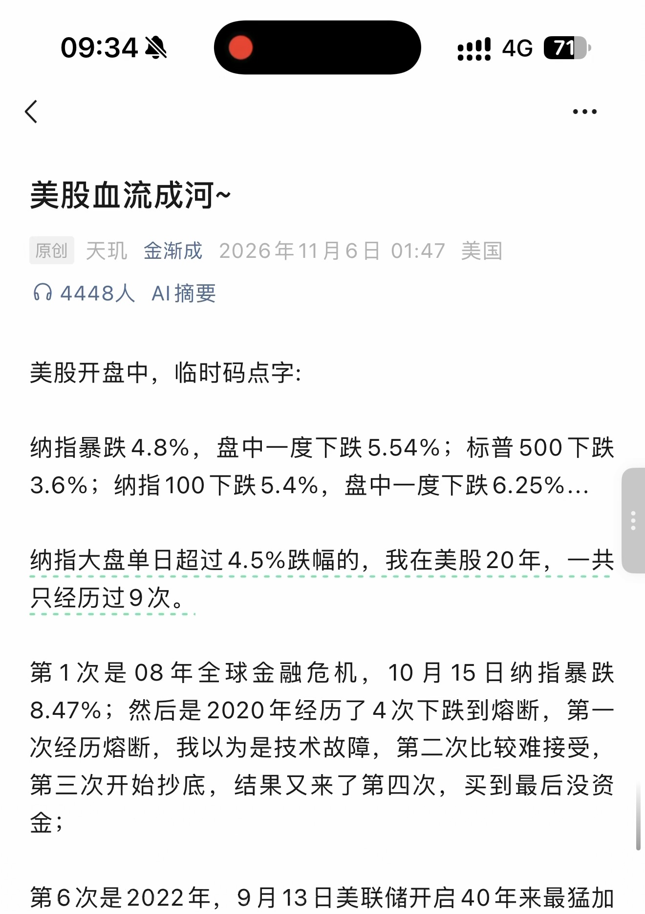
第 2 页 · 原始截图

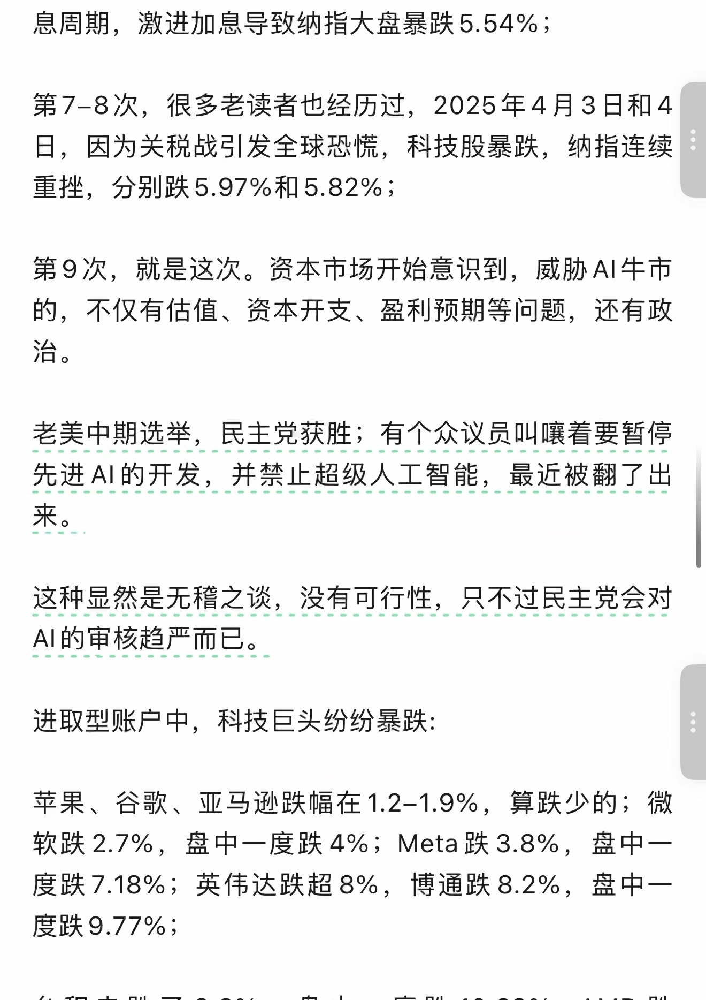
第 3 页 · 原始截图

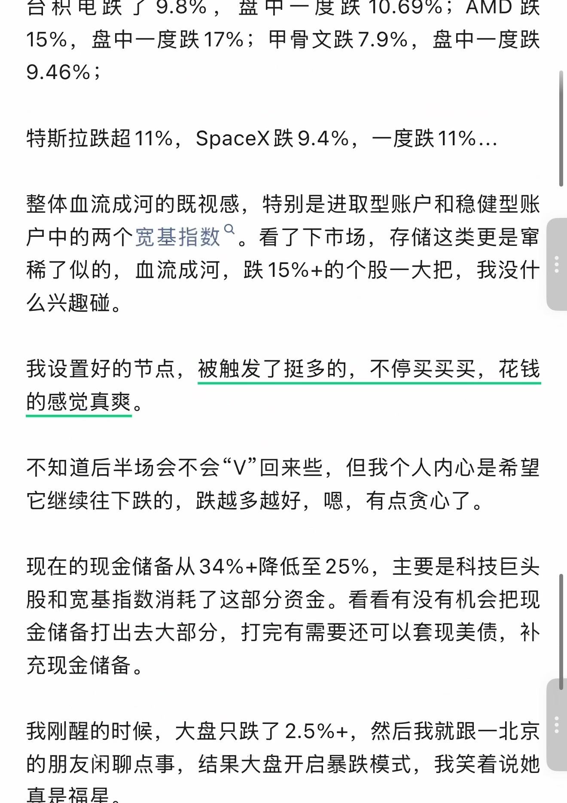
第 4 页 · 原始截图

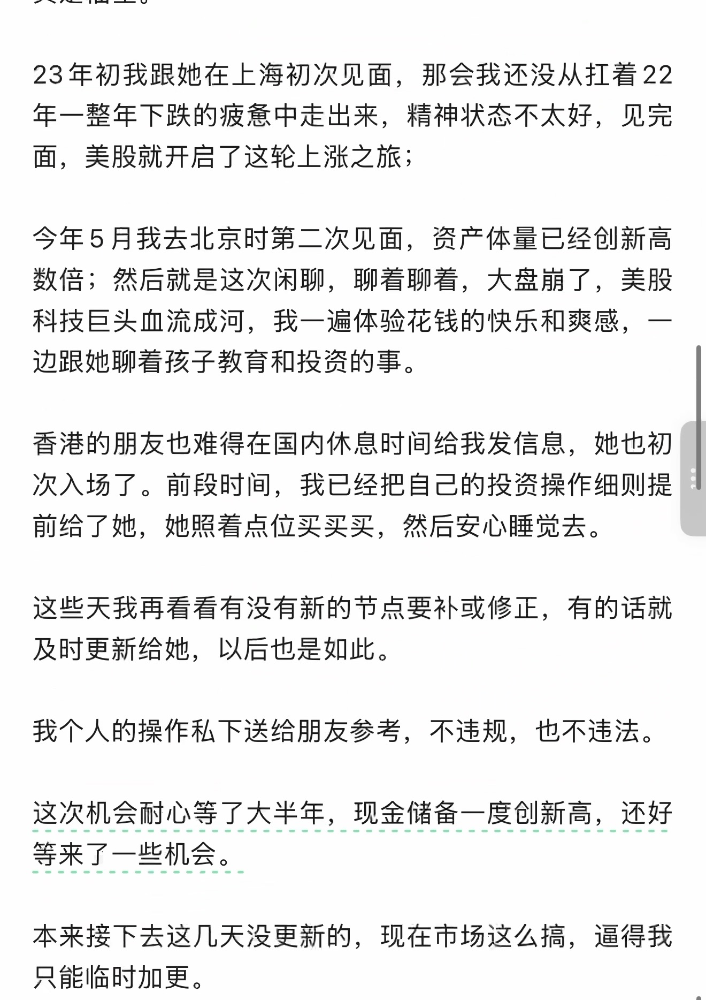
第 5 页 · 原始截图

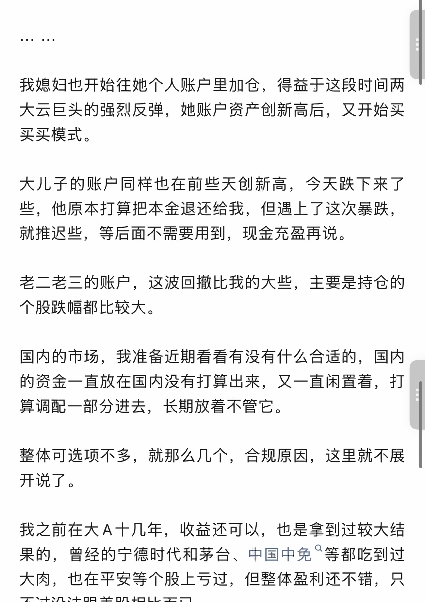
第 6 页 · 原始截图

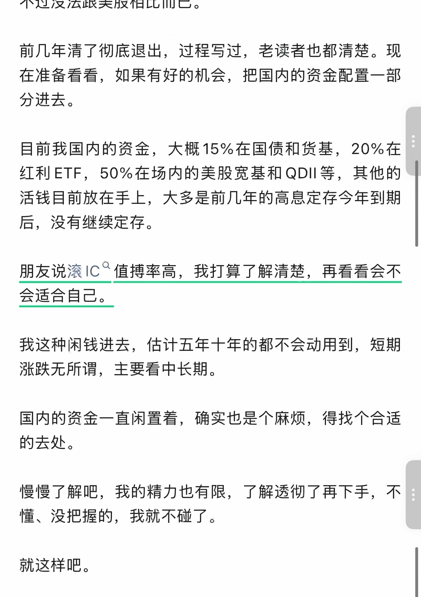
第 7 页 · 原始截图

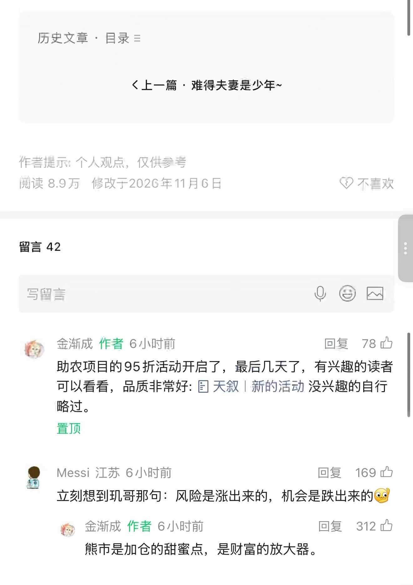
第 8 页 · 原始截图

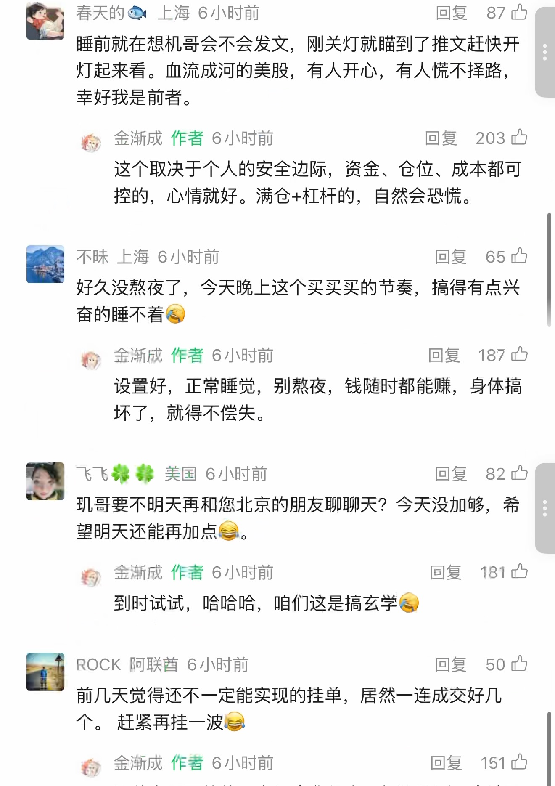
第 9 页 · 原始截图

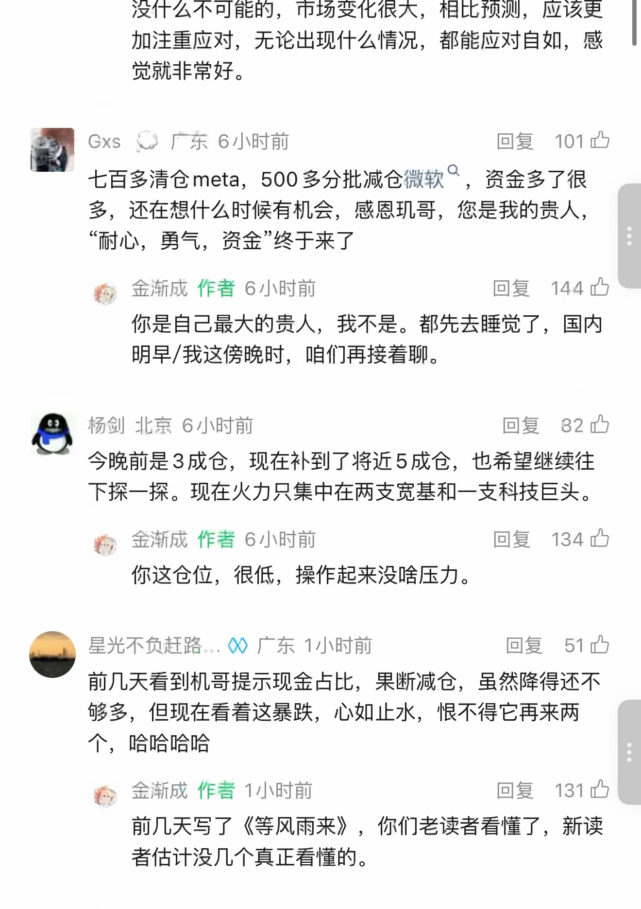
第 10 页 · 原始截图

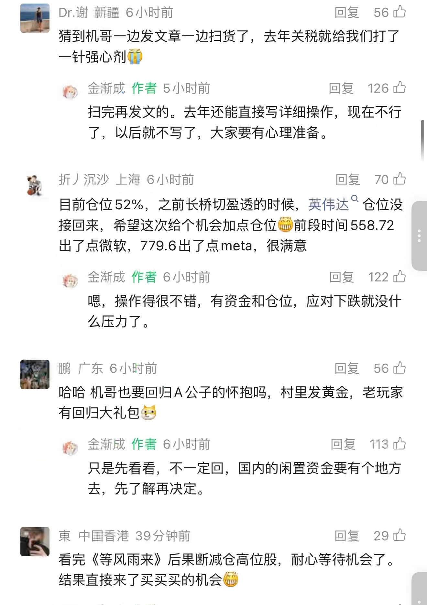
第 11 页 · 原始截图

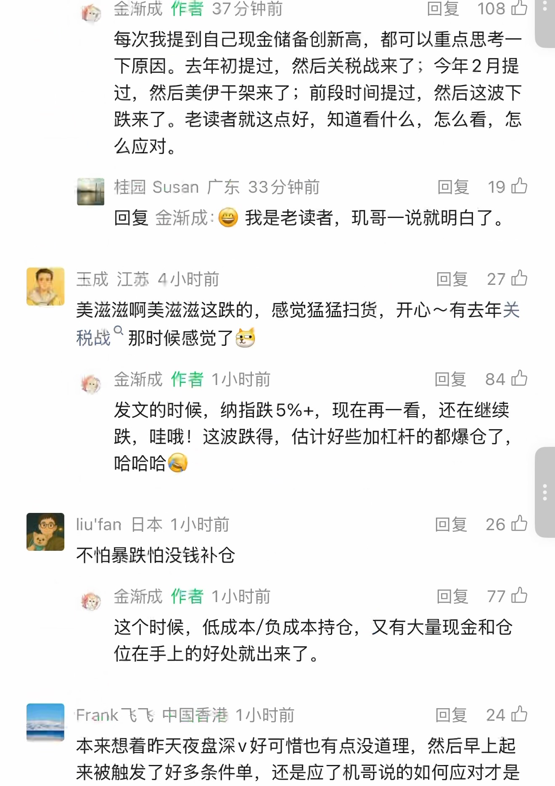
第 12 页 · 原始截图

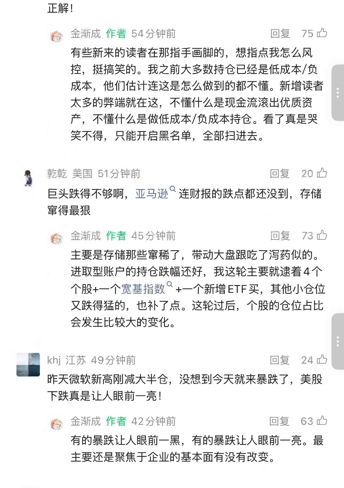
第 13 页 · 原始截图

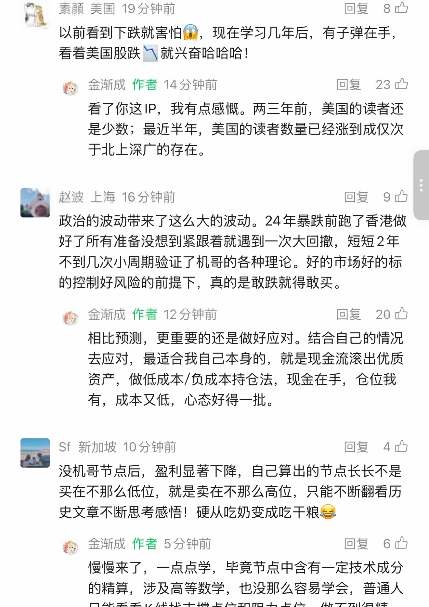
第 14 页 · 原始截图

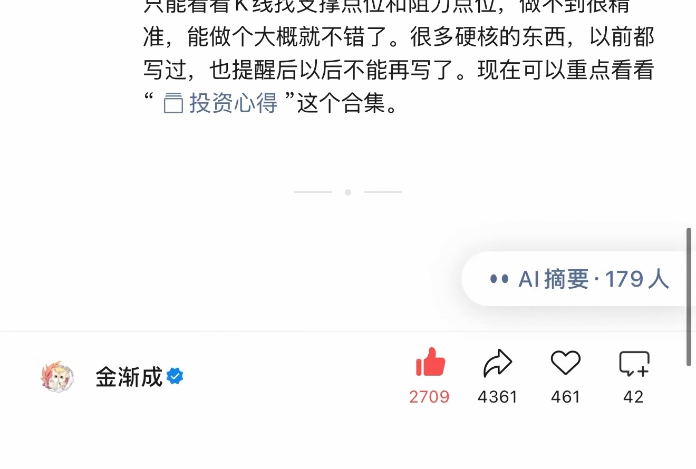
按日期浏览全部来源（同日按条目标识排序）
回到页首